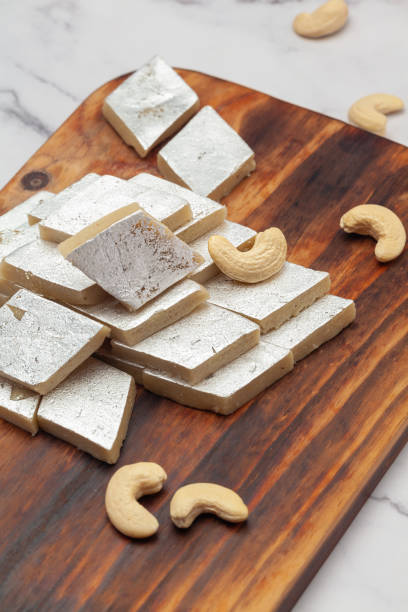

Gulab jamun
Ingredients
- ¾ cup (100 grams) milk powder, unsweetened
- ½ cup (60 grams) maida / plain flour
- ½ tsp baking powder
- 2 tbsp ghee / clarified butter
- milk, for kneading ghee or oil, for frying
Recipe
- Mix milk powder, all-purpose flour, baking soda, and ghee to form a dough.
- Shape the dough into small balls.
- Deep-fry the balls on low heat until golden brown.
- Prepare sugar syrup with water, sugar, and cardamom.
- Soak the fried balls in the sugar syrup for 2-3 hours before serving.

Kaju katli
Ingredients
- 1 cup cashew nuts (kaju)
- 1/2 cup sugar
- 1/4 cup water
- 1/2 tsp ghee (optional)
- Silver vark for decoration (optional)
Recipe
- Grind the cashews into a fine powder without over-grinding.
- In a pan, mix sugar and water to make a sugar syrup of one-string consistency.
- Add the cashew powder to the syrup and cook on low flame until it forms a dough.
- Grease a surface with ghee, roll the dough evenly, and let it cool.
- Cut into diamond shapes and decorate with silver vark if desired.
